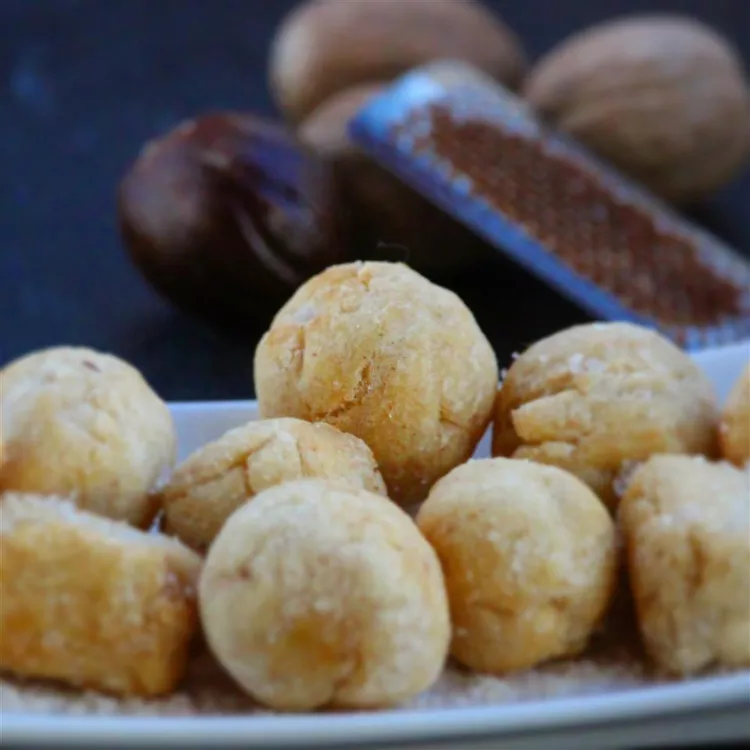

chin-chin
This is a Nigerian recipe that my wife and her family introduced me to. Good!
ingredient
- 8 cups all-purpose flour
- 1 cup butter, at room temperature
- 3 tablespoons butter, at room temperature
- 2 teaspoons ground nutmeg
- ½ cup milk
- 2 tablespoons milk
- 1 cup vegetable oil
Steps
- Mix flour, 1 cup plus 3 tablespoons butter, and nutmeg together in a large bowl until well incorporated. Stir in 1/2 cup plus 2 tablespoons milk until dough comes together.